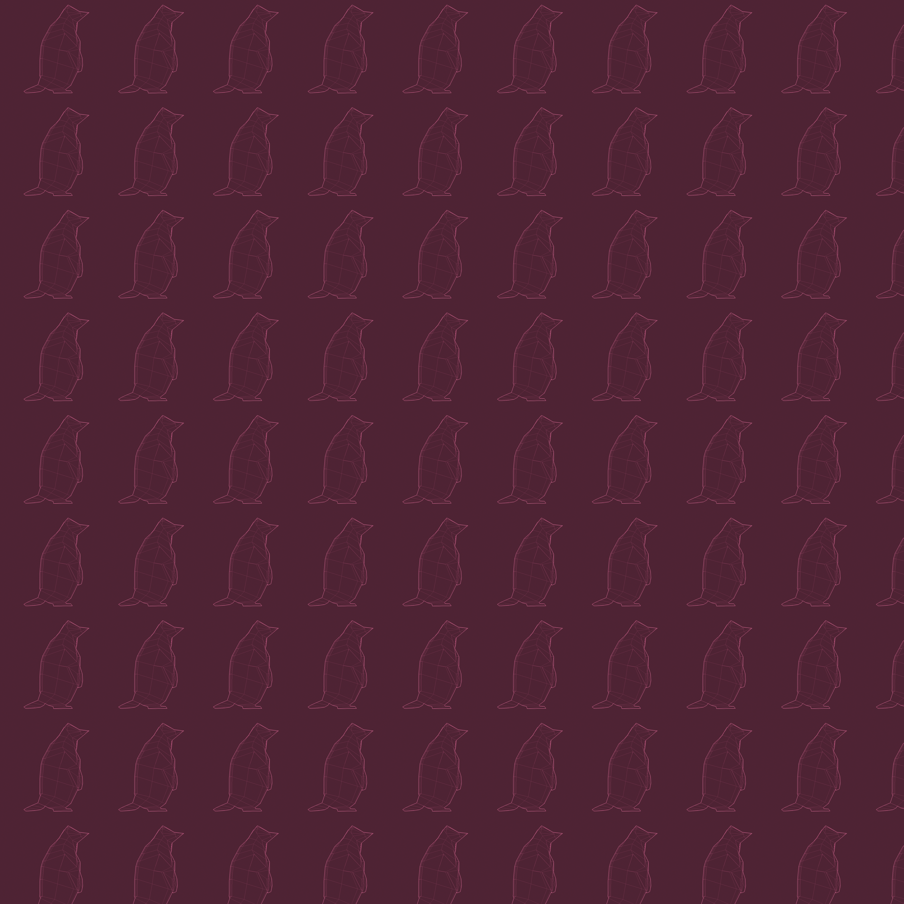

3D modeling has been one of my favorite skills to learn. I enjoy using 3D
tools for design because it is efficient, precise, always moldable, and in
most cases, intuitive. I hope to continue working with 3D software (such
as Blender) throughout the duration of my career as a designer.
Penguin
In 2018, I took a class in which introduced me to the fundamentals for
modeling any object in blender. I learned how to use reference images to
quickly create low-poly objects.

When going about desiging a setting, I improvised the chunk of ice which
the penguin is resting. I used the penguin from my reference photo to
make choiced about the textures used. I have since printed the entire
model and turned it into a wireframe pattern. These are useful skills
for when I would like to use 3D modeling for multimedia use-cases.
Overwhelmed
In 2020, I took a class in 2D modeling Art, which taught me how to use
Adobe Photoshop through a series of projects.
At the beginning of the Coronavirus quarantine, I noticed a spike in
social media usage among my friends. I’ve never been much of a loner,
but the number of messages I had been recieving lately on applications,
such as Instagram and Snapchat, were becoming increasingly overwhelming.
Feeling the force of 30 messages a day from the people I used to know, I
considered whether to delete Snapchat and Instagram--freeing myself from
the sense of obligation to respond to every single message I receive.
As it turns out, I'm not the only one who recently started feeling this
way. People talk aboout the toxicity of comment sections, the pressure
to continually post or feel "liked", and the expectation that someone is
always online because everyone keeps their cellphone with them. I
empathize with the hive-mind of social media users, and particularly the
influence of feed algorithms which keep users present. Social media
usage becomes an addiction just like any other. Currently, I'm stuck on
TikTok.
Coke Can
In 2020, I built these individual objects to learn the fundamentals of
modeling and texturing, navigating Blender software, and applying light
to the scenes. I chose to create this object because I wanted to
challenge myself with mimicking small details to create an ambient
object that looks as realistic as possible.
My dad loves Diet Coke, and has been drinking it by the liter everyday
of his life since before adulthood. I thought of him as I built this
model. I found a CocaCola texture-wrap that was free for use, so I
snagged it.
Lemon
In 2020, I built these individual objects to learn the fundamentals of
modeling and texturing, navigating Blender software, and applying light
to the scenes. I chose to create this object because I wanted to
challenge myself with rounded edges and texturing circles.
My grandmother lived in a gated community that prohibits backyard
fencelines. Before I was 10 years old, I used to wander into her
neighbor's backyards to pick lemons from their trees. I loved to suck on
lemons, although I don't think I particularly enjoyed the sour taste. I
mostly enjoyed the attention I'd receive from my family. I remember them
gasping in awe at the fact that I could suck on a lemon slice until
there was only pulp left.
Airport Chair
In 2021, I was assigned to model something that looks exactly like the
original object. The purpose of this project was to learn how to detail
models using textures; a skill that taught me how to make objects look
realistic. The image with the transparent background was cut-out using
Adobe Photoshop.
Similarly, the image with the orange background was recolored using
Adobe Photoshop. This taught me the fundamentals of scene adjustments
and color filters.
In 2021, I created a mini-city to mimic a motherboard. My goal in this
assignment was to imagine an everday object coming to life, while still
maintaining its functionality. I used the following images as a
reference for the layout and design of individual objects.
Circuit City is the newest of non-technologies to be introduced to your
PC’s system unit. More specifically, Circuit City is a living, bustling
township built to occupy and operate your motherboard. Circuit City runs
your motherboard as effectively and efficiently as actual people,
keeping your computer processes running at humanly-capable speeds and
production (including the possibility for human-error).
How does this living-motherboard work as a computer motherboard? Your
memory is stored within the residents, who live in the neighborhood.
Three zones for working make up the functionality of your motherboard: A
Commercial Zone for managing production, an Industrial Zone that
generates resources for production, and Ports for importing and
exporting assets.
The environment consists of elements from a motherboard, with less
emphasis on the functionality of each piece. The theme is shown within
the architecture and details of the scene. Some components can be
recognized from an actual motherboard, such as the fan and ports. The
color scheme is blue-green with faint circuitry texturing each object;
typical colors/patterns found on circuit boards. An added element is the
fabric found beneath the neighborhood to substitute grass and clarify
the scale of Circuit City.
A Love Letter to Nature
This animation depicts a moment spent out with nature. Like my project,
nature has many individual elements to make up the whole. I chose this
specific scene because I adore flowers and the way hundreds of them can
embellish a field with their bright colors. The creek that flows through
this valley’s pass fills my breezy scene with an additional layer of
serenity.
A tree in nature contributes effortlessly to the needs of its
environment, however, a tree by itself is sustained by its leaves,
roots, and stem that fluently manages the flow and devastation of
natural processes. All individual parts used by the tree (such as its
leaves) are seamlessly integrated by the whole. The leaves are fed upon
by inhabitants of the ecosystem, and perhaps used for shelter or shade.
As temperatures drop, a tree goes dormant and lets its leaves fall to
the ground where organisms may consume its energy and integrate its
essence back into the soil. In other words, individually, a leaf is a
part of the tree and a part of the whole.
All elements of nature is nature itself; we are one and many, and every
fragment of this environment is enabled to provide itself to the whole
as the whole can provide for it. The clouds are to eventually release
their load into the flowing stream, the stream will flow to sections of
the field that mean to feed from its nutrients, the plants develop an
ecosystem that nourishes its flora and fauna brethren, the butterfly
feeds from the landscape and contributes to the transfer of pollen, and
nature continually receives back what has been created or used. Cycles
form, repeat, and die, permitting nature to claim both chaos and
repetition as its natural function.
In-Progress:
I created order through movement (generated by the breeze that pervades
the scene) within each element of this animation, however the placement
and size dynamics were mostly in control of the Blender software, thus
grass blades and leaves were placed as randomly as nature could’ve
predicted. The wind is to project the oneness of all things in this
scene, yet all things remain their own.